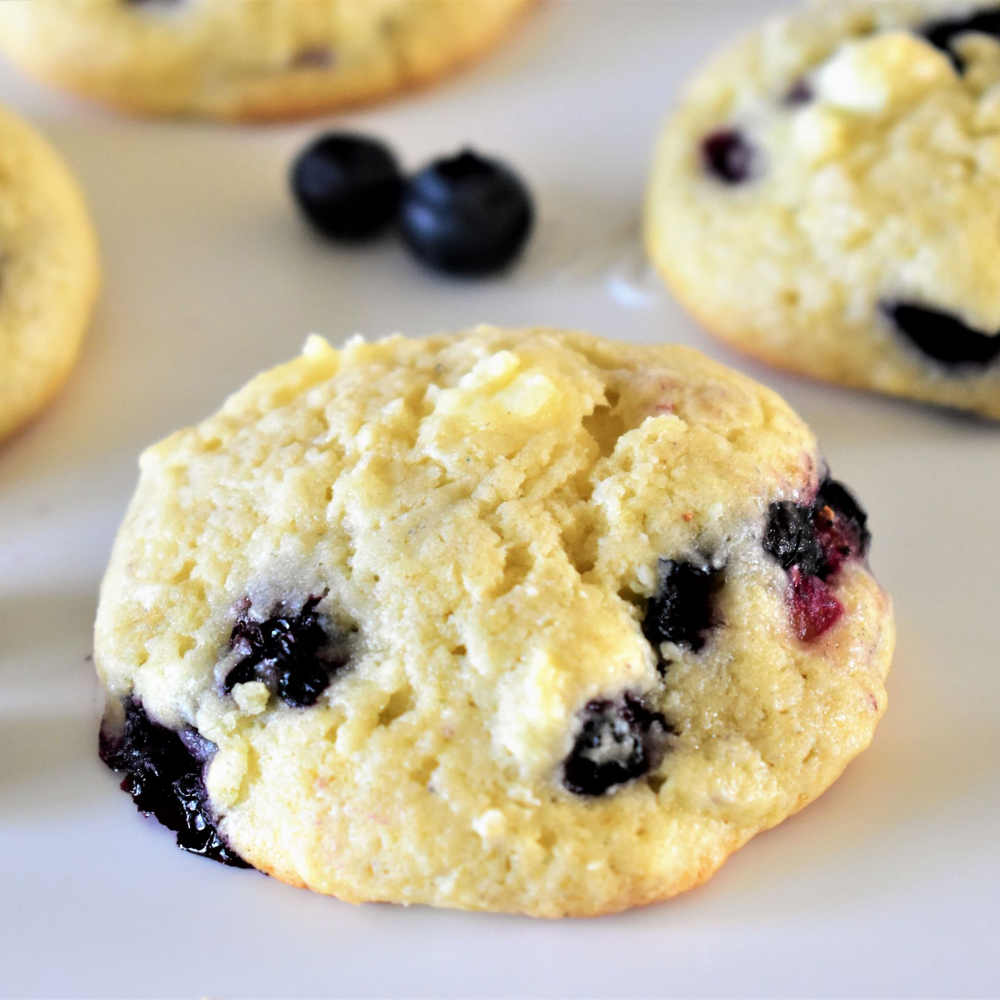

Cream Cookie

Description
If you aren't mixing sour cream into your cookie batter, you could be missing out on a fantastic cookie experience. Sour cream boasts high fat levels and a fair amount of acidity. Both factors give baked goods a hefty dose of moisture, as well as a bright, tangy flavor.
Additionally, sour cream does do not thin out your batter as buttermilk or another liquid ingredient might, which lends the baked cookies a tender, fluffy texture. So whether you just need to use up some extra sour cream or want to enjoy some cookies with a delightfully delicate crumb, check out these sour cream cookie recipes, and whip up a batch of your own.
Ingridients
- 2 cups all-purpose flour
- ½ teaspoon baking powder
- ¼ teaspoon baking soda
- ⅛ teaspoon salt
- 1 cup sugar
- 10 tablespoons unsalted butter, softened
- 1 egg
- 2 teaspoons vanilla extract
- ¼ teaspoon almond extract
Steps
- Preheat the oven to 350 degrees F (175 degrees C). Line 2 baking sheets with parchment paper.
- Whisk together flour, baking powder, baking soda, and salt in a medium bowl. Set aside./li>
- Beat sugar and butter in a large bowl with an electric mixer until light and fluffy, about 2 minutes. Mix in egg, vanilla extract, and almond extract until well combined. Add in 1/3 of the flour mixture and stir until just combined. Stir in 1/2 of the sour cream. Continue alternating additions of the flour mixture and sour cream, beginning and ending with the flour mixture, stirring until just combined. Do not overmix. Gently fold in blueberries and frozen pieces of cream cheese.
- Drop 1 1/2 tablespoon-sized balls of dough onto the prepared baking sheets about 2 inches apart.
- Bake in the preheated oven until the bottom of the cookies just begins to brown, 15 to 18 minutes. Cool on the baking sheets for 5 minutes before removing to a wire rack to cool completely.